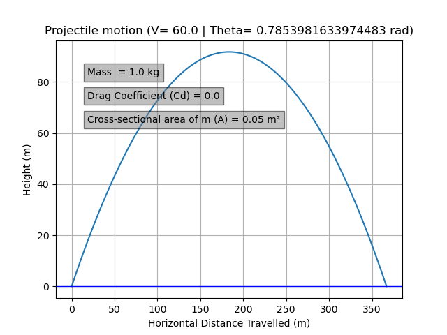
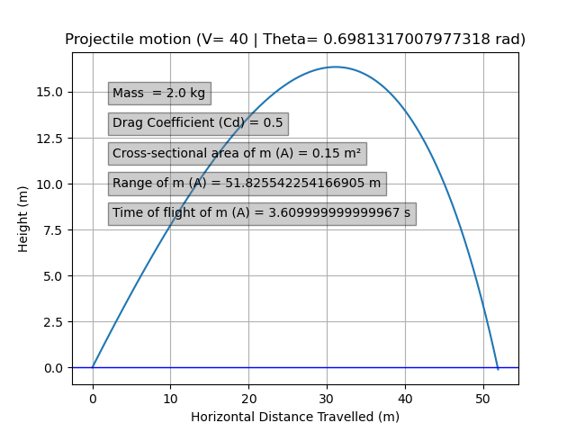
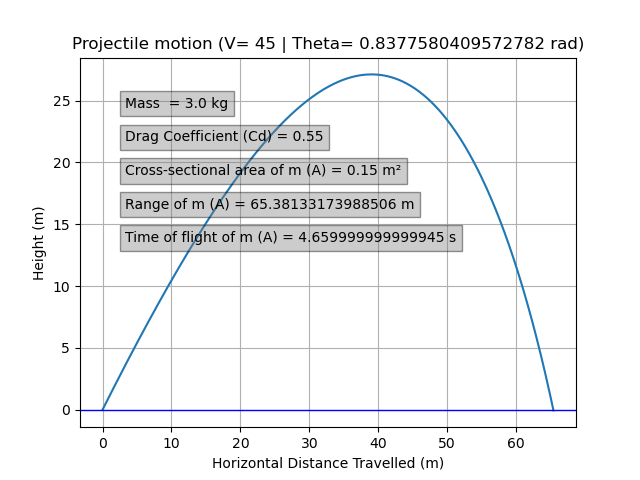
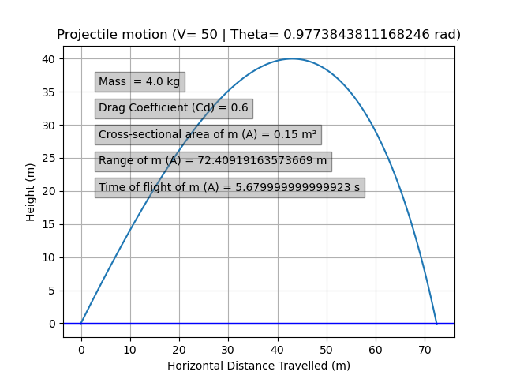
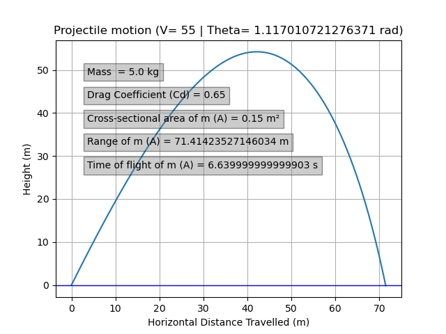
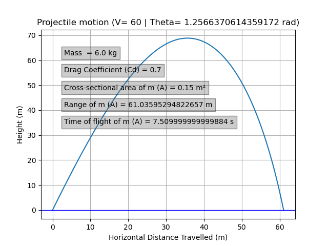
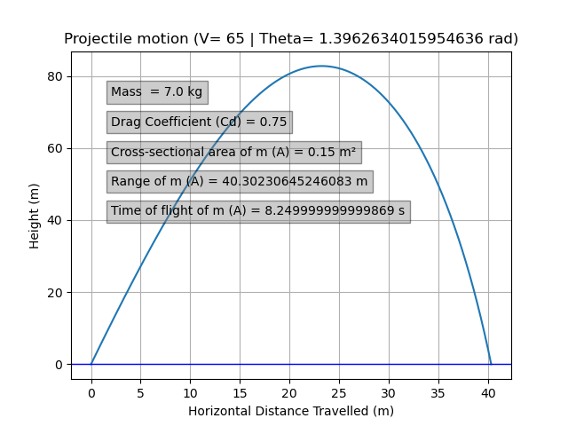
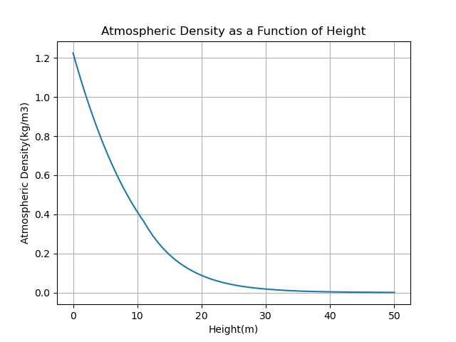
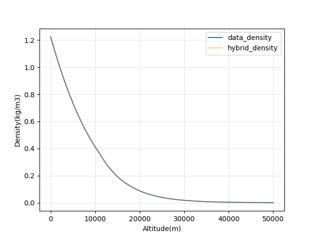
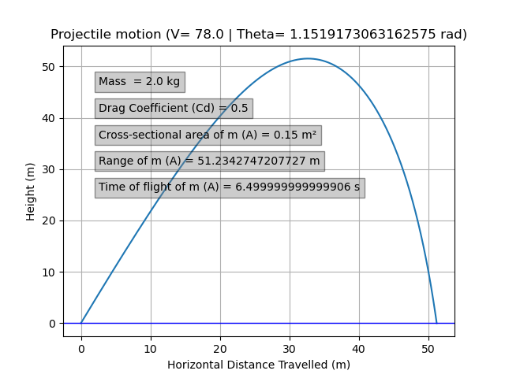

The Ideal Projectile Model
Physics Background
In the classical physics, a projectile moves under gravity alone with no air resistance or frictional intervention. To set up the enhanced model, equations of motion including drag from the start is reviewed below, and then the ideal case is achieved by setting \(F_d = 0\).
Equations of Motion
Let the projectile have mass \(m\), horizontal velocity component \(V_x\), vertical velocity component \(V_y\), and total speed:
\[V = \sqrt{V_x^2 + V_y^2}\]
The aerodynamic drag force acts opposite to the direction of motion and is given by:
\[F_d = \frac{1}{2} \rho \, C_d \, A \, V^2\]
where \(\rho\) is the local air density, \(C_d\) is the drag coefficient, and \(A\) is the cross-sectional area of the projectile. The coupled ordinary differential equations governing the motion are:
\[m \frac{dV_x}{dt} = -F_d \cdot \frac{V_x}{V}\]
\[m \frac{dV_y}{dt} = -mg - F_d \cdot \frac{V_y}{V}\]
Substituting the expression for \(F_d\) and rearranging:
\[\frac{dV_x}{dt} = -\frac{\rho \, C_d \, A}{2m} \cdot V \cdot V_x\]
\[\frac{dV_y}{dt} = -g - \frac{\rho \, C_d \, A}{2m} \cdot V \cdot V_y\]
with the kinematic relations:
\[\frac{dx}{dt} = V_x, \qquad \frac{dy}{dt} = V_y\]
In the ideal (vacuum) case, \(F_d = 0\), so the equations reduce to:
\[\frac{dV_x}{dt} = 0, \qquad \frac{dV_y}{dt} = -g\]
Initial Conditions
The projectile is launched at initial speed \(V_0\) and angle \(\theta\) from the horizontal:
\[V_{x_0} = V_0 \cos\theta, \qquad V_{y_0} = V_0 \sin\theta\]
Numerical Solution: RK4
The ODE system is solved numerically using the fourth-order Runge-Kutta method (RK4). Rather than stepping forward in time with a single slope estimate, RK4 computes four slope estimates per step and combines them into a weighted average:
\[k_1 = f(t_n,\ y_n)\] \[k_2 = f\!\left(t_n + \tfrac{h}{2},\ y_n + \tfrac{h}{2}k_1\right)\] \[k_3 = f\!\left(t_n + \tfrac{h}{2},\ y_n + \tfrac{h}{2}k_2\right)\] \[k_4 = f(t_n + h,\ y_n + h\,k_3)\] \[y_{n+1} = y_n + \frac{h}{6}(k_1 + 2k_2 + 2k_3 + k_4)\]
This gives fourth-order accuracy in the step size — well-suited as a numerical solution method for this kind of problems. The implementation is in ideal.py in the src directory.
Ideal Trajectory
The plot below shows the ideal projectile trajectory — parabolic, as expected under vacuum conditions:

Parametric Cases
Several scenarios were tested by varying the initial speed \(V_0\), launch angle \(\theta\), mass \(m\), drag coefficient \(C_d\), cross-sectional area \(A\) etc, to verify the reliablity of the code. The cases are shown below:






Data Sourcing and Preparation
Source
The official NASA U.S. Standard Atmosphere 1976 document exists as a PDF, but the scanned quality made direct data extraction impractical. The data was instead sourced manually from a third-party website that reproduced the NASA tabular values in a clean, structured format. The only parameters extracted among many other available in the source were: altitude(increased per 200 metres), air density (kg/m³), and dynamic viscosity (Pa·s), from sea level up to 50 km. The raw data was saved as us_atmosphere_NASA.csv in the raw_data directory.
Cleaning
The data was mostly clean as sourced. Cleaning involved standardizing column names and reformatting the data into a more convenient structure for using in the model. The cleaning script clean_us_NASA.py in the cleaning_scripts directory handles this, and outputs atmosphere_nasa_clean.csv to the clean_data directory.
The Atmospheric Density Model
Observed Shape of the Data
The cleaned data was first plotted using plot_test.py in the src directory to examine its structure:

The density decreases rapidly and smoothly with altitude — a shape consistent with a decaying exponential, which follows from the barometric formula derived from hydrostatic equilibrium and the ideal gas law.
Mathematical Ground
Exponential Base Model
The standard barometric approximation for density as a function of altitude \(h\) is:
\[\rho_{\text{base}}(h) = \rho_0 \, e^{-h/H}\]
where \(\rho_0 = 1.225\ \text{kg/m}^3\) is the sea-level density and \(H = 8500\ \text{m}\) is the atmospheric scale height. This captures the dominant trend well, but does not precisely match the observed data at all altitudes.
Real atmospheric density deviates from a single-scale-height exponential due to temperature stratification across different layers — the troposphere, stratosphere, and so on.
More Rigorous Alternatives
For reference, more physically complete models exist:
- The International Standard Atmosphere (ISA) — a piecewise model with distinct temperature lapse rates defined per atmospheric layer, giving a more accurate density profile across the full altitude range.
- NRLMSISE-00 — an empirical model that accounts for solar activity, geographic location, and time of day. Commonly used in orbital mechanics and atmospheric re-entry calculations.
For the purposes of this project — 50 km range, conventional projectile conditions — the deviation from the simple exponential is small enough that a lighter correction approach is sufficient.
Hybrid Correction: Residual Fitting
Rather than replacing the base exponential model, a residual correction was applied. The residual at each altitude is defined as:
\[\varepsilon(h) = \rho_{\text{observed}}(h) - \rho_{\text{base}}(h)\]
A cubic spline \(\hat{\varepsilon}(h)\) is then fitted to these residuals. The spline interpolates smoothly between data points using piecewise cubic polynomials, with the “not-a-knot” boundary condition — a standard choice for this case.
The final hybrid density model is:
\[\rho_{\text{hybrid}}(h) = \rho_{\text{base}}(h) + \hat{\varepsilon}(h)\]
By construction, \(\rho_{\text{hybrid}}\) passes exactly through every data point in the cleaned NASA dataset.
Application
The hybrid density was test coded and plotted alongside the raw data using atmosphere_model.py in the src directory:

The nearly perfect overlap between the two curves in the figure is a direct result of how closely the model tracks the data rather than a rendering artifact.
The profile is smooth and well-behaved across a 50 km range under typical air circumstances, and the cubic spline correction readily absorbs the slight deviations from the base exponential. The improved projectile simulation was then created by passing this hybrid atmospheric density function straight into rho_hybrid_projectile.py.
Enhanced Projectile Simulation
With \(\rho_{\text{hybrid}}(h)\) defined, it was substituted directly into the drag force term of the projectile ODE system . The drag force at each time step becomes:
\[F_d(h) = \frac{1}{2} \, \rho_{\text{hybrid}}(h) \, C_d \, A \, V^2\]
Since \(\rho\) is now a function of the projectile’s current altitude \(y(t)\), the drag force varies continuously throughout the flight. The RK4 integrator handles this naturally, re-evaluating the force at each sub-step. Check the above mentioned python code for the full implementation.
Result

The resulting trajectory is noticeably shorter and lower than the ideal parabola. The drag effect is most pronounced at high speeds — consistent with the \(V^2\) dependence of \(F_d\) — and diminishes as the projectile slows.